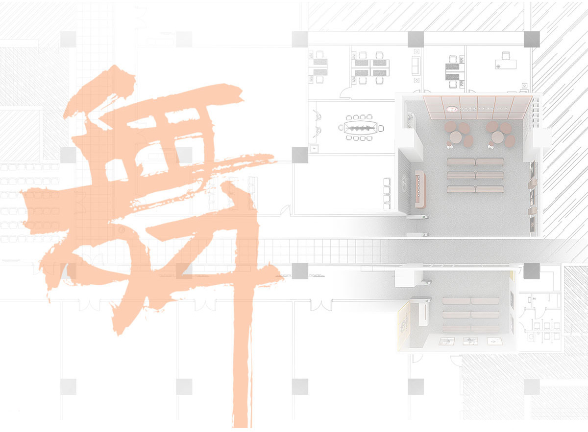
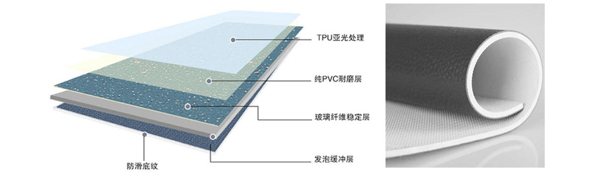
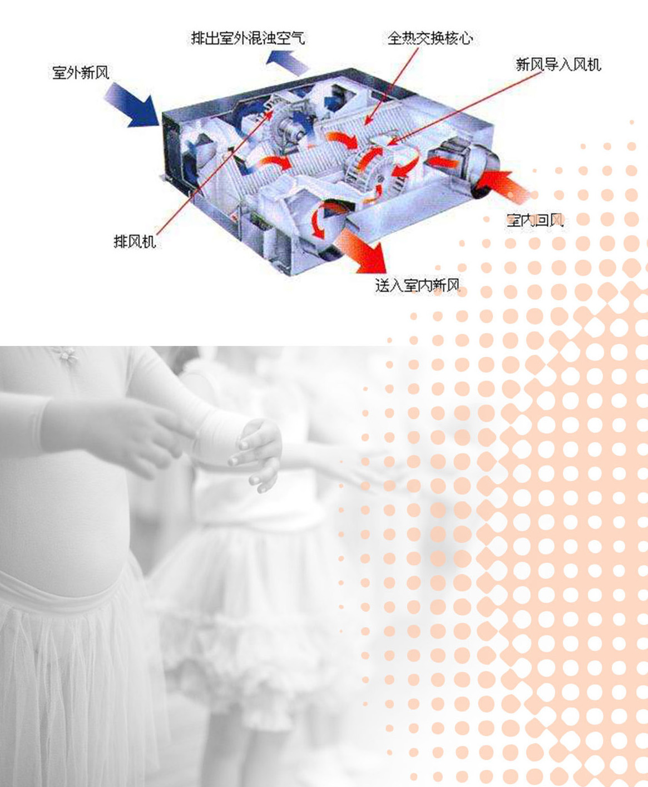

注册体验
北京舞蹈学院天通苑中心
位于天通苑新华未来城，交通便利，距地铁5号线的天通苑南站仅200米。 中心面积
3000余平米
,共有专业化 舞蹈教室
10间
,多元化小剧场供学员剧目排练, 并配有新风系统等配套设施设备。 现设有中国舞等级考试课程和芭蕾舞分级考试课程，中心师资力量雄厚。

北京舞蹈学院天通苑中心，拥有
10间
专业的舞蹈教室， 每间
120㎡
,宽敞明亮,设施完备，是北京舞蹈学院舞蹈考 级的指定场所。

舞蹈教室严格按照国际舞房标准设计和施工，选用10cm 的双层木质龙骨，加上标准厚度且弹性良好的实木地板，木地 板上铺有5mm的原装进口的小丑牌专业地胶，足感舒适、防滑， 能有效地减轻弹跳对关节的冲击力,最大限度地防止运动中受伤。
每间教室都有独立的新风系统和空调系统，为 舞蹈活动中的孩子提供良好的通风条件和适宜的温度保障。
